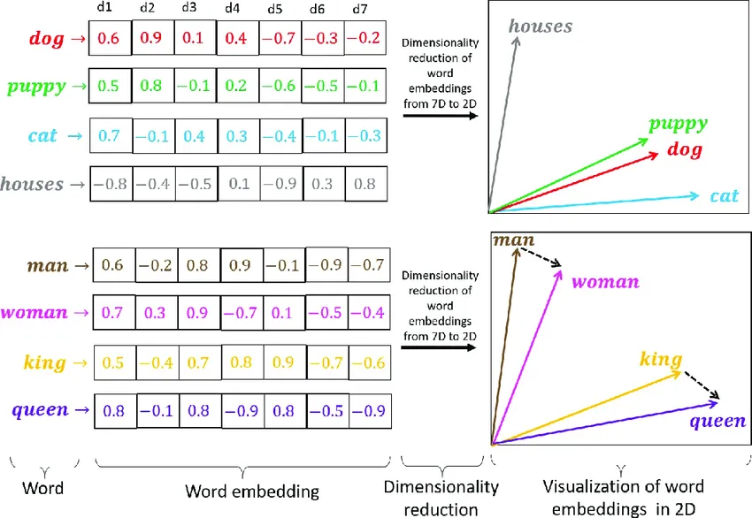

Prompt Engineering
Adolfo Sanz De Diego
Diciembre 2024
Introducción a Prompt Engineering
¿Qué es Prompt Engineering?
- Definición:
- Técnica para diseñar y optimizar instrucciones dadas a un modelo de IA generativa.
- Objetivo principal:
- Obtener resultados más precisos y útiles ajustando las entradas al modelo.
- Ejemplo básico:
- Comparar “Resume el texto” vs. “Resume este artículo en 3 puntos clave para un público técnico”.
Importancia de los Prompts
- Impacto directo en resultados:
- La calidad del prompt define la calidad de la salida generada.
- Eficiencia:
- Prompts bien diseñados reducen iteraciones y ahorran tiempo.
- Flexibilidad:
- Los prompts permiten personalizar respuestas según necesidades específicas.
- Casos de uso clave:
- Redacción creativa, resolución de problemas, generación de código y más.
Ejemplos para Desarrollo de Software (I)
- Generación de Código:
- Crear funciones a partir de descripciones como: “Escribe una función Java que ordene una lista de números.”
- Documentación Automática:
- Generar documentación técnica basada en código existente.
- Debugging:
- Pedir explicaciones sobre errores en fragmentos de código.
Ejemplos para Desarrollo de Software (II)
- Pruebas Automáticas:
- Crear casos de prueba a partir de requisitos específicos.
- Optimización:
- Solicitar recomendaciones para mejorar el rendimiento de un fragmento de código.
- Commits:
- Generar mensajes en los commits en función de las diferencias.
Historia de los Modelos Generativos
Hasta el 2017
- Décadas tempranas:
- Los modelos de lenguaje comienzan con técnicas estadísticas simples.
- Años 2010:
- Avances significativos gracias a redes neuronales.
- 2017:
- Publicación del artículo “Attention is All You Need”, que introduce el mecanismo de atención y los modelos Transformer, revolucionando el campo.
Desde el 2017
- 2018:
- OpenAI lanza GPT (Generative Pre-trained Transformer), demostrando el poder de los modelos de lenguaje preentrenados.
- Años recientes:
- Surgen modelos más avanzados como DALL·E (Imagen), Codex (Código), Whisper (Transcripciones), Sora (Video), Suno (Música) y modelos multimodales, ampliando las aplicaciones de la IA generativa.
Conceptos clave
Tokens (I)
- Las unidades básicas que los modelos procesan, como palabras, subpalabras o símbolos.
- Por ejemplo, “inteligencia” podría dividirse en varios tokens según el modelo.
- El coste de los modelos en la nube en forma de API suele ir por número de tokens procesados.
Tokens (II)
https://platform.openai.com/tokenizer

Embeddings (I)
- Es una representación matemática que convierte datos complejos en vectores, capturando similitudes y relaciones en un espacio multidimensional.
- Es fundamental en IA para reducir la complejidad y permitir que los modelos procesen texto, imágenes o audios de forma eficiente.
- Se usa en tareas como búsqueda semántica, sistemas de recomendación y clasificación, representando información de manera compacta y útil.
Embeddings (II)

Contexto
- Se refiere a la información proporcionada como entrada que guía la generación de respuestas.
- Incluye texto previo, instrucciones específicas y datos relevantes que ayudan al modelo a entender el propósito y mantener coherencia.
- Los modelos tienen un límite de tokens que pueden procesar en una sola interacción.
Tipos de modelos generativos
- De texto a texto.
- De texto a imagen y de imagen a texto.
- De texto a audio y de audio a texto.
- De texto a video y de viideo a texto.
- Multimodales (pueden recibir texto, imágenes, vídeos, audios, etc.) y generan cualquier tipo de resultado.
Características de un buen prompt
Claridad y concisión
- Un buen prompt debe ser claro y directo.
- Evitar ambigüedades o términos que puedan ser interpretados de múltiples formas.
- Prompt: “Generame un ejemplo de un cliente y un servidor en Java para comunicaciones multicast.”
Contexto suficiente
- Proporcionar el contexto necesario para que la IA comprenda la intención del usuario.
- Incluir detalles relevantes como objetivos, audiencia, o formato deseado.
- Prompt: “Creame una función en Java 8 para rellenar un objeto JSON para mandar via API REST los datos personales de una persona.”
Especificidad
- Detallar claramente lo que se espera en la respuesta.
- Evitar generalidades que puedan llevar a respuestas vagas o irrelevantes.
- Prompt: “Genera el cógido HTML, CSS y JavaScript necesario para pintar un diagrama de GANT que se vea en un navegador. Inventate los datos y devuelveme un solo fichero con todo el html, css y javascript necesario.”
Estructura
- Formular el prompt con una estructura lógica y ordenada.
- Utilizar listas, preguntas claras o ejemplos para guiar a la IA.
- Prompt: “A partir de este texto: hola mundo Creame un fichero XML guardando el salto de linea entre hola y mundo en una misma etiqueta remplazando el salto de línea por su códido UTF8”
Tipos de prompts
Directos
- Preguntas o comandos simples y directos.
- Prompt: “Escribeme una función nvl de Oracle en PostgreSQL.”
Creativos
- Estimulan respuestas únicas o fuera de lo común.
- Prompt: “Como harías una apliación de venta de cortinas.”
Narrativos
- Orientados a desarrollar historias o explicaciones detalladas.
- Prompt: “Genera una memoria para desarrollar un proyecto de IOT para una granja inteligente.”
Estructurados
- Usan un formato claro, como tablas, listas o párrafos con secciones específicas.
- Prompt: “Haz una tabla con un menú saludable de desayuno, comida y cena para toda la semana, y al final me sacas una lista de las productos que tengo que comprar en el supermercado.”
Reflexivos
- Invitan a un análisis profundo o comparaciones.
- Prompt: “Analizame las consecuencias del uso masivo de la IA hoy en día.”
Mejorar la precisión y relevancia de las respuestas
Reformulación del prompt
- Reescribir el prompt para hacerlo más claro o específico.
- Evitar preguntas demasiado abiertas o genéricas.
- Prompt: En lugar de “Explícame las bases de datos”, usa “Explica las principales diferencias entre bases de datos SQL y NoSQL, con ejemplos.”
Uso de ejemplos
- Proporcionar ejemplos específicos en el prompt para orientar a la IA.
- Prompt: “Genera un ejemplo de código en Java usando Spring de una clase EmployeeController con los métodos para exponer una API REST.”
Definir el formato esperado
- Incluir en el prompt cómo debe estructurarse la respuesta (listas, párrafos, tablas, etc.).
- Prompt: “Crea una lista de 5 herramientas populares para gestión de proyectos de software con una breve descripción de cada una.”
Iteración
- Si la respuesta inicial no es satisfactoria, ajustar el prompt con más detalles o nueva información.
- Prompt: Si “Describe cómo funciona Git” no da el nivel deseado de detalle, reformular a: “Describe el flujo de trabajo básico de Git, incluyendo los comandos init, add, commit y push, con ejemplos.”
Establecer límites o parámetros
- Definir restricciones como la longitud máxima de la respuesta o el tono deseado.
- Prompt: “Explica qué es Kubernetes en menos de 100 palabras y con un enfoque técnico.”
Utilización de ejemplos en el Prompt
Zero-Shot Prompting
- Solicitar directamente la tarea sin ejemplos previos.
- Prompt: “Explica qué es el paradigma de programación orientado a objetos.”
One-Shot Prompting
- Proporcionar un ejemplo para guiar la respuesta.
- Prompt: "Escribe un ejemplo de código en Java que utilice un
HashMapparecido al siguiente ejemplo:
Few-Shot Prompting
- Ofrecer múltiples ejemplos para contextualizar mejor la tarea.
- Prompt: “Escribe un ejemplo de código de bucle
do-whileen Java parecido a los siguientes ejemplos: ”
Ajuste de las respuestas
Ajuste del Tono
- Adaptar la formalidad o la calidez de la respuesta.
- Prompt: “Explica qué es un IDE en un tono amigable para principiantes.”
Ajuste del Estilo
- Cambiar el formato o enfoque de la respuesta.
- Prompt: “Describe cómo funciona una
LinkedListen Java, pero usa un estilo narrativo paso a paso.”
Ajuste de la Formalidad
- Modificar el nivel de formalidad según el público objetivo.
- Prompt: “Describe el ciclo de vida de un objeto en Java con un tono académico.”
Uso de Roles
- Asignar un rol específico al generador de contenido.
- Prompt: “Imagina que eres un instructor de Java. Explica cómo crear un programa que lea y escriba archivos de texto.”
Adaptación a Públicos Específicos
- Personalizar la respuesta para una audiencia específica.
- Prompt: “Explica qué es un servidor web a estudiantes de informática con conocimiento básico de redes.”
Uso de Plantillas
- Crear estructuras reutilizables para tareas frecuentes.
- Prompt: "Usa esta plantilla para responder:
- Introducción breve.
- Explicación técnica.
- Ejemplo práctico. Pregunta: ¿Cómo funciona el garbage collector en Java?"
Uso de Delimitadores
- Delimitar entradas o contexto para mayor claridad.
- Prompt: "Responde ‘¿Qué hace este programa?’ considerando únicamente el siguiente código:
Prompts para Tareas Específicas
- Diseñar prompts para casos concretos.
- Prompt: “Escribe un código en Java que utilice el patrón de diseño Factory y explica brevemente su propósito.”
Distintos Tonos y Estilos
Formal
- Se utiliza para comunicar ideas con precisión, seriedad y profesionalismo.
- Prompt: “Explique de manera detallada el uso de patrones de diseño en Java, incluyendo ejemplos específicos de implementación y sus beneficios en la arquitectura de software.”
Conversacional
- Es amigable y cercano, ideal para mantener una interacción más relajada.
- Prompt: “Oye, ¿podrías explicarme cómo usar interfaces en Java? Estoy un poco confundido sobre cuándo usarlas en lugar de herencia.”
Educativo
- Orienta hacia la enseñanza y la claridad, adecuado para explicar conceptos paso a paso.
- Prompt: “Crea una guía paso a paso para principiantes sobre cómo construir una aplicación Java básica que lea y escriba datos en un archivo.”
Persuasivo
- Busca convencer al lector o usuario de adoptar una idea, enfoque o herramienta.
- Prompt: “Convénceme de por qué deberíamos usar Spring Framework en nuestro próximo proyecto de desarrollo en lugar de una solución personalizada en Java.”
Humorístico
- Introduce ligereza o humor para hacer el contenido más atractivo y ameno.
- Prompt: “Explícame la diferencia entre una clase abstracta y una interfaz en Java, pero hazlo como si fueras un camarero explicando diferentes tipos de café.”
Empático
- Transmite apoyo y comprensión, ideal para conectar con los sentimientos del lector.
- Prompt: “Sé que puede ser abrumador aprender sobre colecciones en Java. ¿Podrías explicármelas de forma sencilla y darme algunos ejemplos prácticos?”
Entusiasta
- Muestra motivación y pasión, ideal para inspirar al lector o usuario.
- Prompt: “¡Explícame cómo implementar una API REST con Spring Boot! Estoy súper emocionado por empezar con Java en desarrollo backend.”
Neutral
- Proporciona información imparcial, precisa y sin juicios.
- Prompt: “Proporcione un ejemplo de cómo implementar un patrón Singleton en Java, destacando sus ventajas y desventajas.”
Creativo
- Explora ideas innovadoras o contextos imaginativos para resolver problemas.
- Prompt: “Imagina que estás desarrollando un juego de aventuras en Java. Escribe el código para una clase ‘Hero’ que pueda atacar, defenderse y ganar experiencia.”
Autoritario
- Comunica seguridad y experiencia para guiar al lector con determinación.
- Prompt: “Proporcione una guía definitiva sobre cómo configurar un entorno de desarrollo Java profesional, incluyendo IDE, gestión de dependencias y herramientas de prueba.”
Directo
- Va al grano, ofreciendo respuestas rápidas y claras.
- Prompt: “Dame un ejemplo simple de cómo usar un bucle ‘for’ en Java para recorrer una lista de números.”
Inspirador
- Busca motivar al lector y estimular su confianza o creatividad.
- Prompt: “Motiva a un desarrollador principiante en Java explicando cómo dominar este lenguaje puede abrir puertas en el desarrollo de aplicaciones empresariales y móviles.”
Técnico
- Se enfoca en detalles complejos y específicos, usando lenguaje técnico.
- Prompt: “Describa cómo funciona el recolector de basura en la JVM, incluyendo los distintos tipos de GC disponibles y cuándo utilizarlos, así como los distintos parámetros de configuración.”
Técnicas Avanzadas de Prompt Engineering
Cadena de Pensamiento (CoT)
- Descomponer una tarea compleja en pasos más pequeños y claros.
- Prompt: “Para implementar un patrón de diseño en Java, primero elige un patrón, luego define sus clases clave y finalmente implementa el comportamiento. Ejemplo: Diseña un patrón Singleton en Java.”
Prompts Negativos
- Especificar qué no incluir en la respuesta.
- Prompt: “Explica cómo funciona un servidor HTTP en Java, pero no menciones frameworks como Spring.”
Prompts Iterativos
- Refinar progresivamente las respuestas a través de ajustes iterativos.
- Prompt: “Proporciona una descripción de las estructuras de datos en Java. … Ahora amplía la explicación incluyendo ejemplos prácticos de uso.”